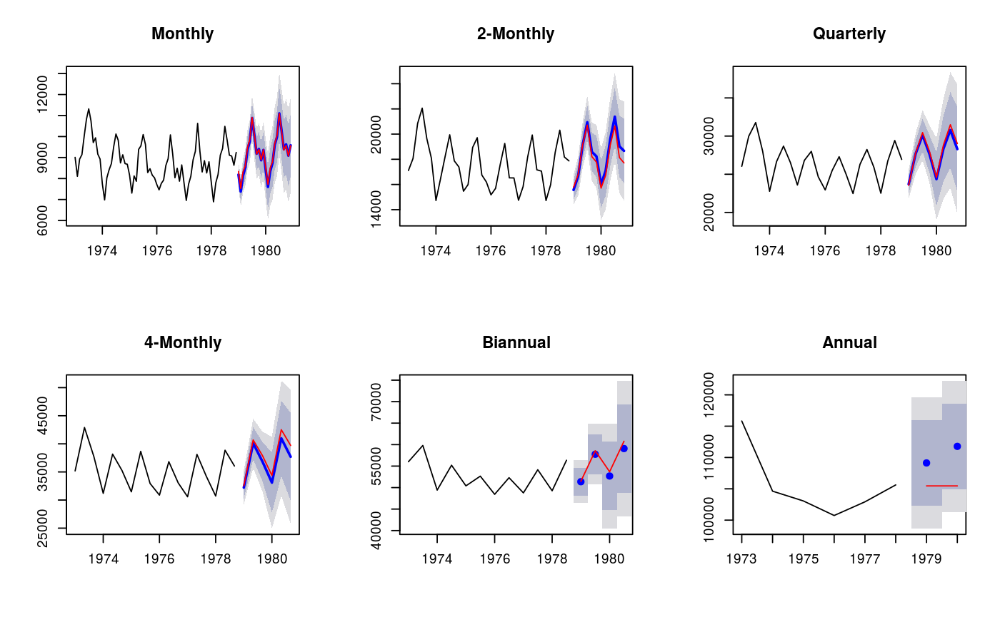

Takes forecasts of time series at all levels of temporal aggregation and combines them using the temporal hierarchical approach of Athanasopoulos et al (2016).
reconcilethief(forecasts, comb = c("struc", "mse", "ols", "bu", "shr", "sam"), mse = NULL, residuals = NULL, returnall = TRUE, aggregatelist = NULL)
| forecasts | List of forecasts. Each element must be a time series of forecasts, or a forecast object. The number of forecasts should be equal to k times the seasonal period for each series, where k is the same across all series. |
|---|---|
| comb | Combination method of temporal hierarchies, taking one of the following values:
|
| mse | A vector of one-step MSE values corresponding to each of the forecast series. |
| residuals | List of residuals corresponding to each of the forecast models.
Each element must be a time series of residuals. If |
| returnall | If |
| aggregatelist | (optional) User-selected list of forecast aggregates to consider |
List of reconciled forecasts in the same format as forecast.
If returnall==FALSE, only the most disaggregated series is returned.
# Construct aggregates aggts <- tsaggregates(USAccDeaths) # Compute forecasts fc <- list() for(i in seq_along(aggts)) fc[[i]] <- forecast(auto.arima(aggts[[i]]), h=2*frequency(aggts[[i]])) # Reconcile forecasts reconciled <- reconcilethief(fc) # Plot forecasts before and after reconcilation par(mfrow=c(2,3)) for(i in seq_along(fc)) { plot(reconciled[[i]], main=names(aggts)[i]) lines(fc[[i]]$mean, col='red') }